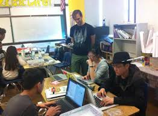
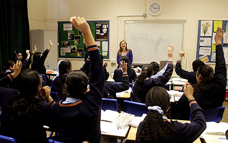

Participation in after school programs is associated with:
Youth Programs
Check out the latest programs & activities being offered at Teen Tech Hub
-
Upcoming Coding Boot Camps
Our Bootcamps consist of 12 weeks of intense coding. Students will learn how to:
- Code HTML/CSS and javascript
- Work as a team
- Build positive self-esteem
- Create a portfolio for future employers
- Establish connections with your community
- Become a superstar
-
Upcoming Seminars & Workshops
Checkout one of our Seminars:
- January 16, 2016 at 08:00am - Introduction to HTML/CSS
- January 23, 2016 at 08:00am - Intermediate HTML/CSS
- January 30, 2016 at 08:00am - Advanced HTML/CSS
- February 6, 2016 at 08:00am - Introduction to Javascript
- February 13, 2016 at 08:00am - Javascript and the DOM
- February 20, 2016 at 08:00am - Javascript Objects
We have much more to offer, so come join us!
-
Teen Tech Hack Days

Workshops are held every Saturday from 9:00am to 2:30pm at Teen Tech Hub. Workshops are open to anyone.
Workshops for the month of January include:
- Self-Esteem - What is it really?
- Peer-Pressure - How to deal with it?
- Bullying - How to avoid bullying and being a bully
- Anger Management - How to let off steam
-
Mentorship
Pay it forward by helping teens and tweens.
Teach students how to:
- To create beautiful websites
- Develop a powerful support group
- Program in different languages
- Establish personal goals
- Communicate effectively and help others
-
Career & Intership Opportunities

Teens and tweens will participate in career building exercises and to create and focus their goals toward a successful career.
Teen Tech Hub aligns with local companies eager to provide internships to our older students. Interns will receive real-world training and establish connections that may lead to future full-time career opportunities.
The "Hire Us!" Program
Teen Tech Hub has established connections with companies throughout the state that are eager to enlist students that have demonstrated the ability and eagerness to learn. These companies are dedicated to improving our communities and making a difference in society.
If you are a company looking to get involved, please contact us.
Courses
Master javascript web development through real world and hands-on application.
Become a guru in web design. Build interactive web applications that are visually stimulating.
Build dynamic sites infusing Ruby into your full stack web applications.
Learn the skills needed to be a true leader in your professional and personal lives.
Leave a positive imprint on the world. Learn how to manage the daily stresses of life.
Build a support group that truly cares about you and will nurture your growth.
Please Donate!
Teen Tech Hub is a 104(c)(3) non-profit organization. In order to continue to service our community's most valuable commodity, our youth, we need your help. We would greatly appreciate your donations. In order to help us continue our mission, please click below:
We Could Use Your Help!
Teen Tech Hub utilizes the power of the community in order to assist the young men and women that come to us for help. But, for us to help them, we need your help first. Make an investment today in a young person's future, come in and volunteer. There is no shortage of ways for you to help, and your time will be utilized to it maximum potential. Please click on the button below to volunteer:
About us
Teen Tech Hub’s goal is to empower youth and gather community resources in order to nurture a sound learning environment. We partner with Silicon Valley organizations like Teens in Tech and HackStar Academy to assist with course curriculums and mentorships. Our program will equip our students with the necessary tools to change lives and communities.
Teen Tech Hub participants will be divided into 2 separate groups of 15. Each group will meet twice a week separately. On Saturdays the groups will meet as a whole and the participants will receive instruction and mentoring from mentors in coding, design, and social media marketing. Each session will last for 90 minutes.
During the 9-month program, the teens will go through team building exercises where they will be able to share the issues they feel are unique to them.
Once the youth graduate from the program, they will be encouraged to come back and help the next class. This will further increase their self-esteem, purpose as well as sense of communityContact Us
Teen Tech Hub would love to hear from you! To contact us:
Teen Tech Hub
1981 Landings Drive, Building K
Richmond, CA 94043
USA
(800) TEEN-TEK
support@teentechhub.org
If you have any problems with the website, contact the webmaster.